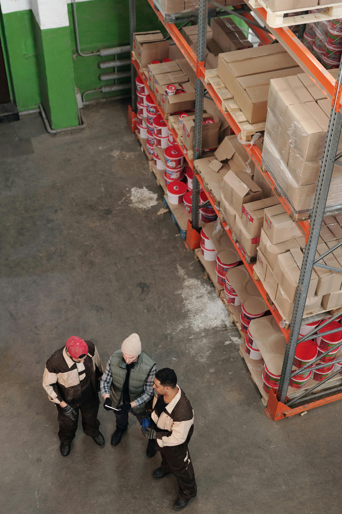

Quiénes somos
Atlas Prime es una empresa especializada en soluciones logísticas modernas, enfocada en brindar transporte seguro, eficiente y confiable. Nuestro compromiso es ofrecer un servicio profesional que permita a empresas y particulares mover sus productos con total tranquilidad.

Nuestra visión
En Atlas Prime creemos que la logística moderna debe combinar tecnología, planificación y responsabilidad. Nuestro objetivo es convertirnos en una empresa referente en transporte y logística dentro del sector.
Cada envío que gestionamos representa una responsabilidad, por eso trabajamos con procesos claros, planificación estratégica y compromiso con cada cliente.
Misión
Brindar soluciones logísticas eficientes que garanticen seguridad, puntualidad y confianza en cada entrega.
Valores
Responsabilidad, transparencia y compromiso con cada cliente que confía en nuestros servicios.
Compromiso
Nuestro equipo trabaja continuamente para mejorar procesos logísticos y optimizar cada operación.
Atlas Prime en números
1500+
Entregas realizadas
98%
Clientes satisfechos
24h
Seguimiento operativo
100%
Compromiso logístico